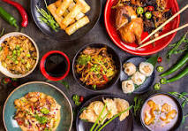
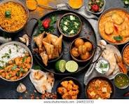
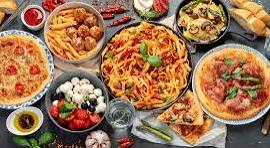

Welcome to our food section!

Chinese cuisine is known for its diverse flavors and cooking techniques. It includes dishes such as sweet and sour pork, kung pao chicken, and fried rice. Chinese food is often characterized by its use of soy sauce, ginger, garlic, and various spices. It is enjoyed by people all around the world for its delicious taste and unique flavors.quick and easy to make, making it a popular choice for meals.

Indian cuisine is known for its rich flavors and diverse cooking techniques. It includes dishes such as butter chicken, biryani, and paneer tikka. Indian food is often characterized by its use of spices like turmeric, cumin, and coriander. It is enjoyed by people all around the world for its delicious taste and unique flavors. Indian food is also known for its vegetarian options, making it a popular choice for those who follow a plant-based diet.

Italian cuisine is known for its simple yet flavorful dishes. It includes classics such as pasta, pizza, and risotto. Italian food is often characterized by its use of fresh ingredients like tomatoes, basil, and olive oil. It is enjoyed by people all around the world for its delicious taste and unique flavors. Italian food is also known for its regional diversity, with each area offering its own specialities.